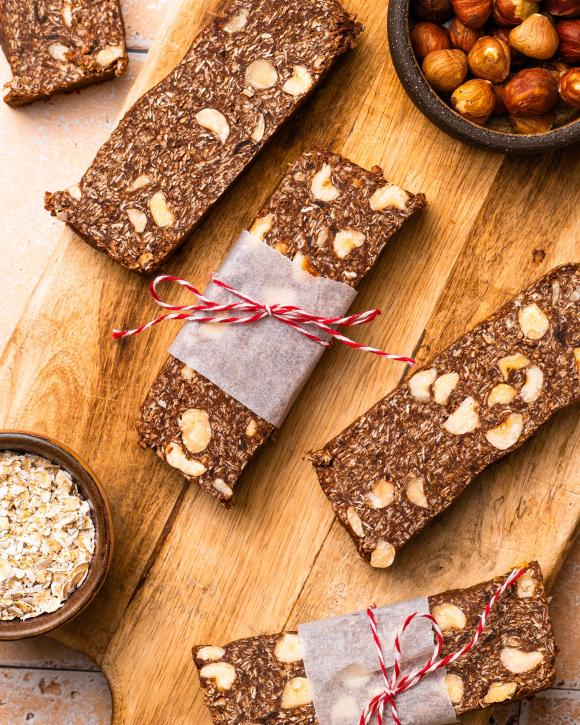

Φράουλες στο τηγάνι με μέλι, ξινομυζήθρα και αμύγδαλα
- Πλένουμε 500 γρ. φράουλες και τις στεγνώνουμε.
- Ζεσταίνουμε ένα αντικολλητικό τηγάνι και ψήνουμε τις φράουλες για λίγα λεπτά σε δυνατή φωτιά μέχρι να μαραθούν.
- Περιχύνουμε με 150 ml μέλι και προσθέτουμε τα φύλλα από 1 κλαράκι φρέσκο θυμάρι. Αφήνουμε να χλιαρύνουν.
- Σερβίρουμε τις φράουλες πάνω από 2 φλιτζ. ξινομυζήθρα και πασπαλίζουμε με 80 γρ. αμύγδαλα, ψημένα στους 150°C για 8-10 λεπτά.
Μπάρες χωρίς ψήσιμο και χωρίς ζάχαρη

- Χτυπάμε 2 κούπες χουρμάδες, 1/2 κούπα χυμό πορτοκαλιού, 1 κούπα αμύγδαλα ωμά, 2 κουτ. σούπας καρύδα αποξηραμένη και 3 κουτ. σούπας κακάο στο μπλέντερ ή μουλτι.
- Αν χρειαστεί, χτυπάμε τα υλικά σε δόσεις και τα ανακατεύουμε καλά.
- Αδειάζουμε το μείγμα σε ταψάκι καλυμμένο με λαδόκολλα.
- Σκεπάζουμε με μεμβράνη και το τοποθετούμε στο ψυγείο για 1 ώρα.
- Βγάζουμε το ταψί και χαράζουμε το μείγμα σε μπάρες.
- Συντηρούμε τις μπάρες στο ψυγείο.
Τρούφες με μέλι και αμύγδαλα
- Ζεσταίνουμε 180 γρ. κρέμα γάλακτος και 15 γρ. μέλι σε μια κατσαρόλα, ανακατεύοντας μέχρι να αρχίσει να φουσκώνει.
- Αποσύρουμε από τη φωτιά και προσθέτουμε 200 γρ. κουβερτούρα (τεμαχισμένη). Αφήνουμε για 2-3 λεπτά και ανακατεύουμε καλά μέχρι να λιώσει και να γίνει λείο το μείγμα.
- Σκεπάζουμε το μείγμα με διάφανη μεμβράνη και το βάζουμε στο ψυγείο για 2-4 ώρες, μέχρι να σφίξει, αλλά να μην παγώσει εντελώς.
- Μόλις σφίξει, παίρνουμε με κουταλάκι περίπου 10 γρ. από το μείγμα και το πλάθουμε σε μπαλίτσες.
- Τοποθετούμε τις τρούφες σε λαδόκολλα και τις αφήνουμε στο ψυγείο για 24 ώρες μέχρι να σφίξουν πλήρως.
Μπανανοτηγανίτες με βρώμη βήμα-βήμα
- Χτυπάμε τις νιφάδες βρώμης στο μπλέντερ.
- Λιώνουμε τις μπανάνες.
- Χτυπάμε τα αυγά και τα προσθέτουμε στις μπανάνες.
- Προσθέτουμε το αλεύρι βρώμης και αλάτι.
- Ζεσταίνουμε βούτυρο σε αντικολλητικό τηγάνι.
- Ρίχνουμε χυλό και τηγανίζουμε μέχρι να φουσκώσει, γυρίζοντας την τηγανίτα.
- Σερβίρουμε με μέλι και κανέλα.
 Spoon Theory
Spoon Theory